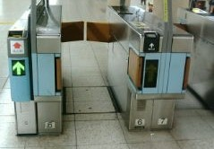

今回、はじめて台湾の地下鉄に乗った。台湾でもキップの改札はもちろん自動機。しかし自動機のタイプが日本と違っていた。台湾での自動機は遮蔽板が扇型。自販機で購入したコインを自動機の指定箇所に軽く接触させると、扇が上に上がって自動機の中に吸い込まれる。
改札機
キップは10円硬貨くらいのプラスチック製コイン。このコインにICチップが埋め込まれている。
プラコイン
日本では自動機にキップを入れると、遮蔽板がウチワのように前後に動き、ペタンと改札機の腹にくっついて、道を開ける。それにくらべると台湾タイプの遮蔽板の動きはカメラのシャッターみたいでスマートな感じがした。
日本式 
日本式の場合、キップは紙製なので毎日 使用済みキップのゴミが大量に発生する。しかし台湾式では、プラコインを繰り返して使う。当然 キップゴミは発生しない。ゴミをムダに発生させないという点で、台湾式の方がいいなと思った。しかしよく考えてみると、そうでもない。
改札機にキップの回収機能はついていない。そこで出るするときは出る専用の機械が必要となる。指定箇所にコインを投入すると、コインが回収される。つまり‘入’と‘出’で、２種類の自動機が必要となっている。
出札用
日本式では、１台で‘入’と‘出’の両方に対応している。そこで利用時間帯の乗客人数によって‘入’と‘出’を切り替えることができる。その点では、日本式に軍配。
そこで朕思へらく。
日本もキップだけ紙製からプラスチックなどに改めるといい。プラコインでは小さすぎるので（紛失しやすい）、名示くらいの大きさのカードとする。これにＩCチップを入れて、投入金額のデータを記憶する。そうすれば紙ゴミも発生しない（たしか香港島と九竜半島を結ぶ地下鉄もそうなっていた記憶）。
|